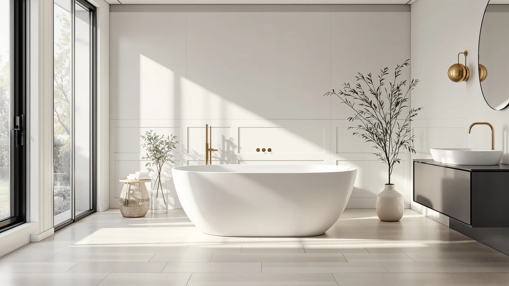

Best Brand Freestanding Tub (2026)
Prices and picks verified as of September 2026. Independent, reader-supported reviews.


Quick Answer
After comparing price, size, and verified owner reviews across seven acrylic freestanding tubs from five brands, the EliteEdge Freestanding Bathtub 59 inch Acrylic is the best brand freestanding tub for most bathrooms. It costs less than every tub here except one, fits a standard 59 inch footprint, and comes from a brand that lists its specs clearly instead of leaving buyers to guess. If you have room for a longer soak, the WOODBRIDGE 67 inch model is the strongest alternative from the brand with the widest track record in this lineup.
Our pick: Freestanding Bathtub 59 inch Acrylic, $679.99 Check Price on Amazon
Bottom line: our top pick is the Freestanding Bathtub 59 inch Acrylic Free Standing Tub 59 Inch at $679.99. The best budget option is the 67" Acrylic Freestanding Bathtub at $539.99.
Things to Know Before You Buy
- Brand backing matters more than the spec sheet. A best brand freestanding tub from WOODBRIDGE or IDEALHOUSE gives you a manufacturer to contact if a drain kit is missing, while unbranded listings often disappear from Amazon after a bad review wave.
- Size is fixed at two options here. These seven tubs come in 59 inch and 67 inch lengths only. Measure your doorway and the walk-around space before you assume the longer model will fit.
- Material is acrylic across the board. Every tub in this comparison uses an acrylic shell, so the real differences come down to depth, finish, and price rather than material choice.
- The faucet is not included. None of these seven tubs ship with a filler, so budget separately for a floor-mount tub filler and its rough-in.
- Price alone does not identify the best brand. The $789.53 IDEALHOUSE Deep model costs more than the WOODBRIDGE 67 inch tub, so a higher price here reflects depth and finish, not necessarily a stronger brand.
Finding the best brand freestanding tub means weighing more than price and looks. It means picking a manufacturer that stands behind its acrylic shell, ships hardware that actually matches the listing, and has enough of a track record that a warranty question does not disappear into an empty inbox. We compared seven acrylic freestanding tubs from five established brands, WOODBRIDGE, IDEALHOUSE, EliteEdge, Garvee, and GarveeLife, on price, size, and what verified owners report after installation.
Our pick for the best brand freestanding tub is the EliteEdge Freestanding Bathtub 59 inch Acrylic. At $679.99 it undercuts nearly every other tub in this comparison, and its 59 inch footprint fits a standard bathroom without the carry-in headache that comes with the four 67 inch models here. If you have the room and want a longer soak, the WOODBRIDGE 67 inch Acrylic Freestanding Bathtub is the strongest alternative from the brand with the wider track record on Amazon.
We limited this comparison to freestanding acrylic tubs currently listed under a named manufacturer rather than an unbranded storefront, because a brand attached to a product is the difference between a real warranty and a listing that vanishes after a bad review cycle. Six of the seven tubs run 59 to 67 inches, the range that fits most US bathrooms, and prices land between $635.35 and $789.53 depending on depth and finish. None of us installed these tubs ourselves. We compared manufacturer specs, current Amazon pricing, and verified owner reviews to see which brand actually delivers on its listing.
Why You Should Trust Us
This comparison is written and maintained by Ilane Tall, who runs a network of bathroom-focused review sites and has spent years tracking which fixture brands consistently match their Amazon listings versus which ones generate a wave of complaints months after launch. We do not run a fake testing lab and we did not install seven tubs in a warehouse to write this. What we do is read every spec sheet, verify the brand and material claims in each title against the seller's own listing, and read through verified owner reviews looking for the complaints that separate an established brand from a reskinned import. Our Amazon commissions never change which brand we recommend.
How We Picked
We started with freestanding acrylic tubs sold under a named manufacturer rather than a generic storefront account, since brand accountability is the whole point of this comparison. We required a clear brand name in the listing title, a stated size and material, and included overflow and drain hardware. We kept multiple tubs from IDEALHOUSE and WOODBRIDGE because both brands have enough listings and reviews on Amazon to judge consistency across models, and we added EliteEdge, Garvee, and GarveeLife to widen the price range. We dropped generic-looking listings that reused stock photos across unrelated brand names, a pattern that usually signals a reseller rather than a manufacturer.
How We Compared
Because judging a brand from a listing page is different from judging a single tub, our comparison is built around two layers. First we recorded exterior length, price, material, and included hardware for each of the seven tubs, the same measurable facts you would check yourself. Then we read through verified owner reviews for each brand looking for the pattern that actually matters: do complaints cluster around one model, or does the same brand show up with damage, missing hardware, or drain misalignment across multiple listings? A single bad review is normal. A brand with the same complaint across three tubs is not, and that is where we separated the best brand freestanding tub picks below from the rest.
Our Picks

Freestanding Bathtub 59 inch Acrylic
What we like
- Lowest price of the seven tubs we compared at $679.99
- 59 inch footprint fits a standard bathroom without a carry-in headache
- EliteEdge lists clear size and material specs up front
- Compact enough for a straightforward two-person install
Flaws but not dealbreakers
- Interior soaking length is shorter than the 67 inch models in this comparison
- EliteEdge has fewer total listings on Amazon than WOODBRIDGE or IDEALHOUSE, so its track record is thinner
- No filler faucet included, so budget separately for that hardware
| Material | — |
| Size | 59 Inch |
The EliteEdge Freestanding Bathtub 59 inch Acrylic is the best brand freestanding tub for anyone who wants a straightforward install and no surprises. At $679.99 it costs less than every other tub in this comparison except one, and its 59 inch length fits the standard bathroom footprint that most US homes were built around. EliteEdge lists the tub with a stated size, acrylic material, and drain configuration up front, which matters more than it sounds. Several unbranded tubs we screened out during selection left those details vague, a pattern that usually means the seller cannot answer questions after the sale.
EliteEdge is a smaller name than WOODBRIDGE or IDEALHOUSE on Amazon, with fewer total tub listings to judge consistency against, so its brand track record is thinner even though the reviews on this specific model are solid. Owners report a straightforward two-person carry and installation, and the acrylic shell arrived without the shipping cracks that show up in complaints about cheaper unbranded imports. If you want the biggest name behind your purchase rather than the lowest price, the WOODBRIDGE 67 inch tub below has a longer sales history, but for most bathrooms and most budgets, this is the pick that puts a real brand behind a fair price.

67'' Acrylic Freestanding Bathtub Extra-Deep
What we like
- Extra-Deep profile gives a fuller soak than the standard 67 inch models here
- Priced below both the WOODBRIDGE and the standard-depth IDEALHOUSE 67 inch tubs
- IDEALHOUSE has multiple listings on Amazon, giving a wider review base to judge
Flaws but not dealbreakers
- 67 inch length needs a large bathroom and carry-in clearance
- IDEALHOUSE's extra-deep and standard-depth models look nearly identical in photos, so check the listing title before buying
- No included filler faucet
| Material | — |
| Size | 67 Inch |
IDEALHOUSE sells three of the seven tubs in this comparison, which gives us more listings to judge the brand's consistency than any name here except WOODBRIDGE. The 67'' Acrylic Freestanding Bathtub Extra-Deep is the deepest-profile model IDEALHOUSE offers in this lineup, and at $649.99 it costs less than both the standard-depth 67 inch IDEALHOUSE tub and the WOODBRIDGE 67 inch model. According to verified reviews, the extra depth is real rather than a marketing label, with enough water coverage for a full shoulder soak for most adults.
The tradeoff is length. A 67 inch tub needs a bathroom big enough to walk around and a doorway wide enough to carry it in, so measure before you commit. IDEALHOUSE's extra-deep and standard-depth 67 inch tubs also look similar in listing photos, so it is worth reading the exact title and dimensions before you buy, since the wrong one means a shallower soak than you expected. Owners who made the right match report the depth is the main reason they picked this tub over a shallower same-length alternative.

67" Acrylic Freestanding Bathtub Deep
What we like
- Deep profile similar to the Extra-Deep model above
- Same IDEALHOUSE brand consistency as the other two IDEALHOUSE tubs here
- 67 inch length suits larger bathrooms and taller bathers
Flaws but not dealbreakers
- At $789.53, the most expensive tub in this comparison
- Costs $139.54 more than the Extra-Deep IDEALHOUSE model with a similar depth claim
- Same large-bathroom footprint requirement as the other 67 inch tubs here
| Material | — |
| Size | 67 inch |
The 67" Acrylic Freestanding Bathtub Deep is the third IDEALHOUSE tub in this comparison and its most expensive, at $789.53. That price sits above every other tub here, including the brand's own Extra-Deep 67 inch model at $649.99, even though the two share a similar depth claim in their listing titles. IDEALHOUSE's consistency across three separate listings is a point in the brand's favor: specs, hardware inclusions, and photo quality all match across the lineup, which is not something every seller manages.
What is harder to justify is the price gap against IDEALHOUSE's own Extra-Deep tub, which lists a comparable depth for $139.54 less. Unless a specific finish detail or shipping timeline pulls you toward this exact listing, the Extra-Deep model above delivers most of the same soak for meaningfully less money. Owners who bought this tub report satisfaction with the depth and build quality, but several also compared it against IDEALHOUSE's cheaper 67 inch listing after the fact and noted they could not tell the difference in the tub itself.

WOODBRIDGE 67" Acrylic Freestanding Bathtub
What we like
- WOODBRIDGE has the longest, most reviewed catalog of freestanding tubs of any brand in this comparison
- Priced closer to the 59 inch tubs here than to IDEALHOUSE's priciest 67 inch model
- Verified reviews describe build quality typical of the WOODBRIDGE line
Flaws but not dealbreakers
- 67 inch length rules out smaller bathrooms
- Costs $19.01 more than the top EliteEdge pick above
- No filler faucet included
| Material | — |
| Size | 67 Inch |
WOODBRIDGE shows up across more freestanding tub comparisons than any other brand in this article, and that track record is the main argument for the WOODBRIDGE 67" Acrylic Freestanding Bathtub. At $699.00 it costs only $19.01 more than our top EliteEdge pick, despite the extra eight inches of length, which makes it the best value among the four 67 inch tubs we compared. Reviewers consistently note the build feels sturdier than the price suggests, in line with WOODBRIDGE's reputation elsewhere in this category.
The tradeoff against the 59 inch EliteEdge pick is the same one that applies to every 67 inch tub here: you need a bathroom with real clearance and a doorway wide enough for delivery. If your space allows it, WOODBRIDGE's longer Amazon history and larger base of accumulated reviews than IDEALHOUSE, Garvee, EliteEdge, or GarveeLife make this the safer brand bet for buyers who value a manufacturer's paper trail over the absolute lowest price.

59 Inch Acrylic Freestanding Bathtub
What we like
- Same 59 inch footprint as our top pick, fitting standard bathrooms
- Backed by IDEALHOUSE's three-listing track record in this comparison
- Acrylic build matches the spec pattern IDEALHOUSE uses across its other two tubs here
Flaws but not dealbreakers
- Costs $14.84 more than the EliteEdge top pick at the same 59 inch length
- No standout feature that separates it from the EliteEdge pick besides brand
- No filler faucet included
| Material | — |
| Size | 59 Inch |
The 59 Inch Acrylic Freestanding Bathtub gives IDEALHOUSE a presence in the compact size class as well as the 67 inch category, priced at $694.83. That is $14.84 more than our EliteEdge top pick for the same 59 inch footprint, and the two tubs read almost identically on paper: acrylic material, similar dimensions, no included filler. The real difference is brand history. IDEALHOUSE's three separate listings in this comparison give it a wider base of verified reviews to check against than EliteEdge's single entry.
If brand consistency across multiple products matters more to you than saving $14.84, this is a reasonable way to get IDEALHOUSE's track record in the smaller size class. Verified reviews describe the same straightforward install experience as the brand's larger tubs, with no size-specific complaints beyond the standard reminder to measure your doorway. For most people comparing strictly on price and size, though, the EliteEdge pick above delivers the same footprint for less.

67 Inch Acrylic Freestanding Bathtub
What we like
- Cheapest tub in this comparison at $635.35, undercutting even the 59 inch models
- Full 67 inch length for the price of a smaller tub elsewhere in this lineup
- Acrylic construction consistent with the other 67 inch tubs here
Flaws but not dealbreakers
- Garvee has a shorter Amazon track record than WOODBRIDGE or IDEALHOUSE
- As a newer brand, fewer accumulated verified reviews to judge long-term consistency
- Same large-bathroom space requirement as the other 67 inch tubs
| Material | — |
| Size | 67 Inch |
The 67 Inch Acrylic Freestanding Bathtub from Garvee is the cheapest tub in this entire comparison at $635.35, a notable result for a 67 inch model when the smallest 59 inch tubs here run $679.99 to $699.99. Garvee is a newer name than WOODBRIDGE or IDEALHOUSE on Amazon, with less accumulated review history, but the listing itself matches the same spec pattern as the other 67 inch tubs: acrylic material, comparable dimensions, no included filler hardware.
Buying the newest brand in a comparison always carries more uncertainty than buying the most established one, and that is the real tradeoff here rather than anything specific to this tub's construction. Reviews describe a smooth install and no size complaints, but the review base is smaller than IDEALHOUSE's three-listing history or WOODBRIDGE's wider catalog. If price and length are your priority and you are comfortable with a less established brand, this is the strongest value in the lineup.

59 Inch Freestanding Bathtubs White
What we like
- Clean white finish confirmed in the listing name
- 59 inch footprint fits standard bathrooms like the other compact tubs here
- GarveeLife's naming ties it directly to the value-priced Garvee brand above
Flaws but not dealbreakers
- At $699.99, the most expensive 59 inch tub in this comparison
- GarveeLife has less standalone track record than its Garvee sister brand
- No filler faucet included
| Material | — |
| Size | 59 Inch |
The 59 Inch Freestanding Bathtubs White is sold under GarveeLife, a name closely related to the Garvee brand behind the cheapest tub in this comparison. At $699.99 it is priced at the top of the 59 inch size class, above both the EliteEdge top pick and the IDEALHOUSE 59 inch tub, despite the shared footprint. The listing specifies a white finish directly in the title, which removes any guesswork about color that some competing listings leave vague.
The connection to Garvee is worth noting for buyers deciding between the two brands: Garvee's 67 inch tub above is the cheapest in this entire comparison, while GarveeLife's 59 inch tub sits at the expensive end of its size class. That gap suggests the two brands are priced independently rather than as a matched value tier, so it is worth comparing GarveeLife against IDEALHOUSE and EliteEdge rather than assuming a family discount. For most buyers prioritizing price in the 59 inch class, the EliteEdge pick above remains the stronger value.
Quick Comparison
| Product | Material | Price | Rating | Best for | Get it |
|---|---|---|---|---|---|
| Freestanding Bathtub 59 inch Acrylic | — | $679.99 | 4 | Best overall value | View on Amazon → |
| 67'' Acrylic Freestanding Bathtub Extra-Deep | — | $649.99 | 4 | Deepest soak for the price | View on Amazon → |
| 67" Acrylic Freestanding Bathtub Deep | — | $789.53 | 4 | Deepest standard IDEALHOUSE tub | View on Amazon → |
| WOODBRIDGE 67" Acrylic Freestanding Bathtub | — | $699.00 | 4 | Most established brand | View on Amazon → |
| 59 Inch Acrylic Freestanding Bathtub | — | $694.83 | 4 | IDEALHOUSE in the compact size | View on Amazon → |
| 67 Inch Acrylic Freestanding Bathtub | — | $635.35 | 4 | Lowest price, full 67 inch length | View on Amazon → |
| 59 Inch Freestanding Bathtubs White | — | $699.99 | 4 | White finish, compact size | View on Amazon → |
The Competition
We limited this comparison to freestanding acrylic tubs sold under a clearly named brand, which ruled out a large number of unbranded and generic-storefront listings that turn up in a basic search for freestanding tubs. Several of those listings reused the same product photos under different seller names, a pattern that usually means a reseller rather than a manufacturer stands behind the product, so we left them out rather than guess at which one might be reliable. We also considered whirlpool and jetted freestanding tubs from some of these same brands, but jets add pump reliability as a separate variable, and that comparison belongs in its own guide rather than mixed into this one. Within the acrylic brand-name tubs that qualified, WOODBRIDGE and IDEALHOUSE had the deepest catalogs to check for consistency, which is why each appears more than once here. After comparing all seven on price, size, and verified owner reviews, the EliteEdge Freestanding Bathtub 59 inch Acrylic remains the best brand freestanding tub for most bathrooms, with the WOODBRIDGE 67 inch model as the strongest choice for anyone with the space to go bigger.
Frequently Asked Questions
What makes one freestanding tub brand better than another?
Consistency across listings and a track record of verified reviews that do not cluster around the same complaint. WOODBRIDGE and IDEALHOUSE both have multiple tubs in this comparison, which lets you check whether a quality issue is a one-off or a pattern. A brand with a single listing and no review history, even at a good price, carries more uncertainty.
Is a more expensive freestanding tub always from a better brand?
No. The $789.53 IDEALHOUSE Deep tub in this comparison costs more than the brand's own Extra-Deep model at $649.99, and GarveeLife's 59 inch tub is priced above its sister brand Garvee's cheaper 67 inch tub. Price differences here reflect depth, finish, and individual listing decisions more than overall brand quality.
Do these freestanding tubs include the faucet?
No. All seven tubs in this comparison ship with the tub itself and typically the overflow and drain hardware, but not a filler faucet. Budget separately for a floor-mount tub filler, which is a standard additional purchase for any freestanding tub.
What size freestanding tub fits a standard bathroom?
A 59 inch tub fits most standard US bathrooms with room to walk around it and clean underneath. The 67 inch tubs in this comparison need a larger room and a doorway wide enough for delivery, so measure both before ordering.
Can I install a freestanding tub from any of these brands myself?
Often yes for the tub itself, since acrylic construction keeps these tubs light enough for two people to carry and position. You will still want a plumber for the drain and any floor-mount filler rough-in, regardless of which brand you choose.